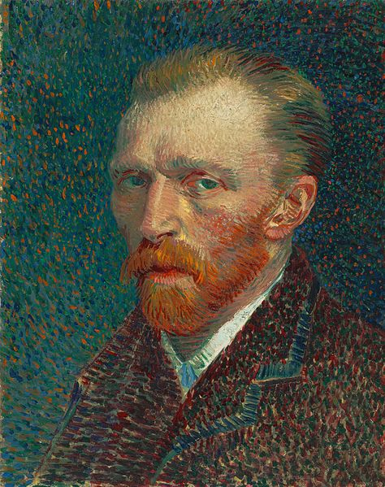
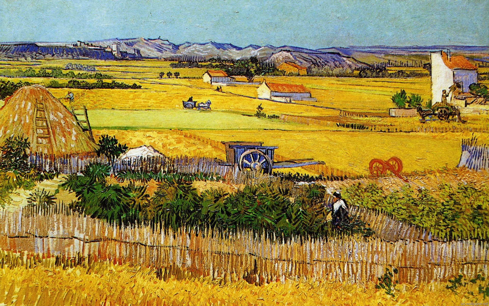

About Vincent
Vincent Willem van Gogh (30 March 1853 - 29 July 1890) was a Dutch Post-Impressionist painter who is among the most famous and influential figures in the history of Western art. In just over a decade he created about 2,100 artworks, including around 860 oil paintings, most of them in the last two years of his life in France, where he died. They include landscapes, still lifes, portraits and self-portraits, and are characterised by bold colours and dramatic, impulsive and expressive brushwork that contributed to the foundations of modern art. His suicide at 37 followed years of mental illness and poverty.
 Born into an upper-middle-class family, Van Gogh drew as a child and was serious, quiet and thoughtful. As a young man he worked as an art dealer, often travelling, but became depressed after he was transferred to London. He turned to religion, and spent time as a Protestant missionary in southern Belgium. He drifted in ill health and solitude before taking up painting in 1881, having moved back home with his parents. His younger brother Theo supported him financially, and the two kept up a long correspondence by letter. His early works, mostly still lifes and depictions of peasant labourers, contain few signs of the vivid colour that distinguished his later work. In 1886 he moved to Paris, where he met members of the avant-garde, including Emile Bernard and Paul Gauguin, who were reacting against the Impressionist sensibility. As his work developed he created a new approach to still lifes and local landscapes. His paintings grew brighter in colour as he developed a style that became fully realised during his stay in Arles in the south of France in 1888. During this period he broadened his subject matter to include olive trees, cypresses, wheat fields and sunflowers.
Van Gogh suffered from psychotic episodes and delusions and though he worried about his mental stability, he often neglected his physical health, did not eat properly and drank heavily. His friendship with Gauguin ended after a confrontation with a razor, when in a rage, he severed part of his own left ear. He spent time in psychiatric hospitals, including a period at Saint-Remy. After he discharged himself and moved to the Auberge Ravoux in Auvers-sur-Oise near Paris, he came under the care of the homeopathic doctor Paul Gachet. His depression continued and on 27 July 1890, Van Gogh shot himself in the chest with a revolver. He died from his injuries two days later.
Van Gogh was unsuccessful during his lifetime, and was considered a madman and a failure. He became famous after his suicide, and exists in the public imagination as the quintessential misunderstood genius, the artist "where discourses on madness and creativity converge". His reputation began to grow in the early 20th century as elements of his painting style came to be incorporated by the Fauves and German Expressionists. He attained widespread critical, commercial and popular success over the ensuing decades, and is remembered as an important but tragic painter, whose troubled personality typifies the romantic ideal of the tortured artist.